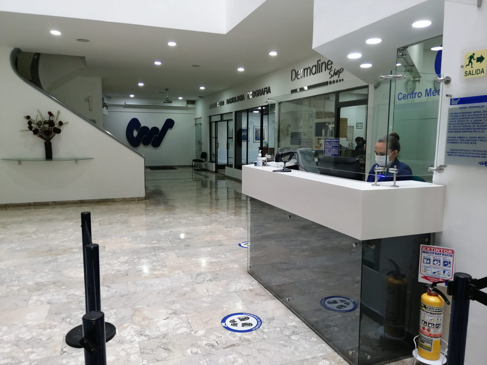
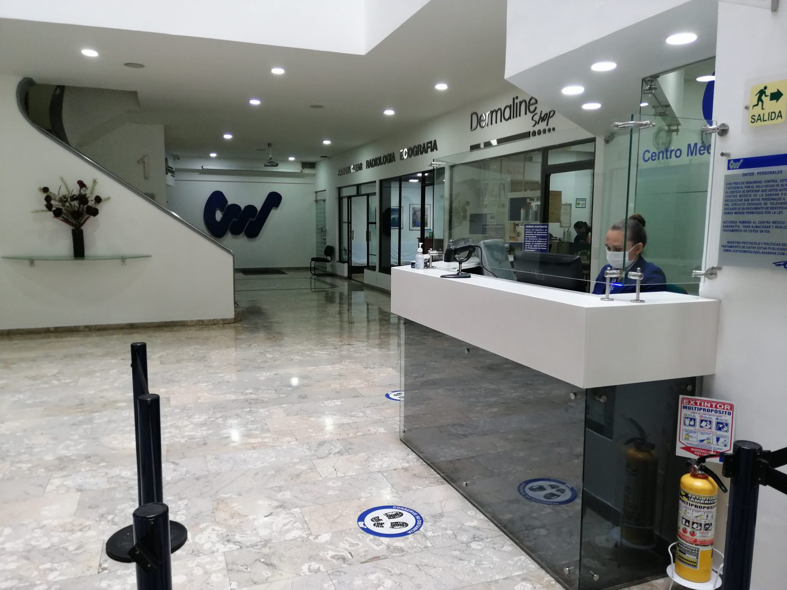

Somos un equipo de trabajo que cuenta con más de 12 años de experiencia realizando exámenes médicos especializados para ingreso y retiro a la armada nacional de Colombia.
Contamos con sede en Centro Médico la Sabana, institución dedicada a la prestación de servicios en salud especializados y en exámenes de diagnósticos y laboratorio clínico por más de 20 años en la ciudad de Bogotá, nuestra trayectoria y amplia experiencia en exámenes de ingreso e incorporación a las empresas públicas y privadas, que unidas al compromiso y reconocimiento, nos permiten ofrecer servicios con calidad, confiabilidad de resultados y cumplimiento, basados en equipos médicos de última tecnología y respaldado por un equipo humano de más de 50 especialistas altamente calificados, lo que nos permite brindar, servicios de excelente calidad, ágil, oportunos y con calidez a todos sus aspirantes.
Contamos con 80 consultorios tripulados por médicos de diferentes especialidades médicas y otros destinados igualmente para realizar un gran número de exámenes paraclínicos y de diagnósticos, con amplias salas de espera confortables, cámaras de seguridad en cada uno de los cinco pisos del centro, vigilancia privada en cada piso y dos baterías de baños también por pisos; en este centro hemos venido prestándole el servicio en los últimos cinco años a los aspirantes a oficiales y suboficiales para ingresar a la armada nacional y esperamos seguir apoyándolos en las próximas incorporaciones.
El Centro Médico la Sabana es una institución en salud certificada y habilitada por secretaria de salud y por las normas INCONTEC; contamos con la experiencia en los diferentes procesos de incorporación a las escuelas de formación para las FF.MM, garantizándole a la armada una estricta valoración médica especializada del recurso humano complementado con estrictas medidas de seguridad al momento de los exámenes, para evitar suplantaciones y plagios dentro del personal a incorporar como son brazaletes de seguridad codificado, huellas dactilares, fotografías al ingreso del examen y copia del documento de identidad, al igual que un manejo de confidencialidad en los resultados de los exámenes y entrega de estos.
 
